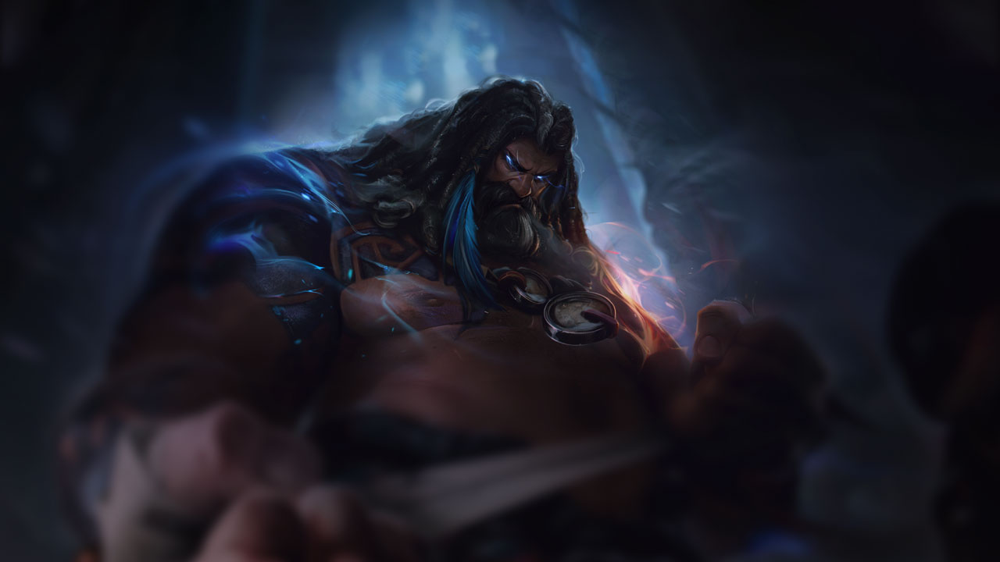
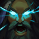
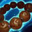
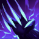
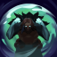
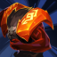
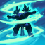
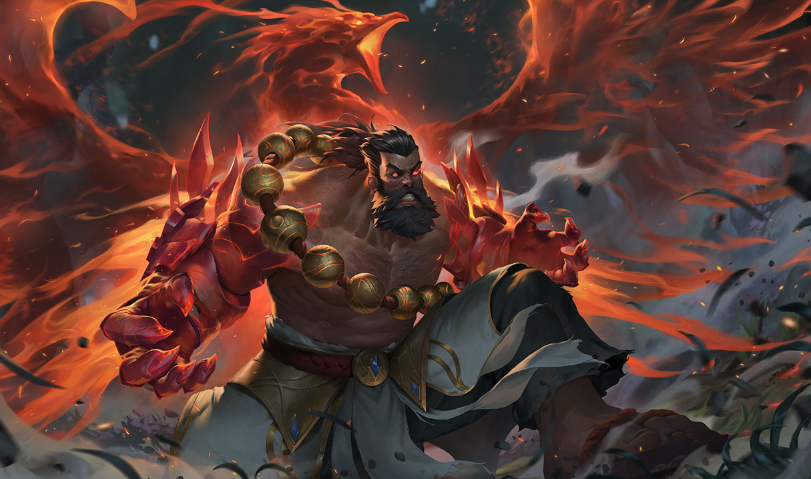

Udyr, THE SPIRIT WALKER

Champion Status
| Release date |
2009-12-02 |
| Last changed |
V13.4 |
| Class |
Juggernaut |
| Last changed |
V13.4 |
| Legacy |
Fighter Tank |
| Last changed |
V13.4 |
| Position |
Jungle |
| Resource |
Mana |
| Range type |
Melee |
Difficulty : Easy
Champion Style : High Toughness, Medium Mobility, Medium Damage
Abilities
Bridge Between STATIC COOLDOWN: 50 / 40 / 30 / 20 (BASED ON LEVEL)

INNATE - AWAKENED SPIRIT: Udyr has no ultimate ability and instead has 4 basic abilities that each incur a Cooldown icon 1.5-second global cooldown when cast. Each ability grants a Stance that empowers his next two basic attacks, and switching Stances will replace the empowered attacks from the previous Stance.
Periodically, after Udyr enters a Stance, he can cast it again at no cost after 0.25 seconds to Awaken it, refreshing the cooldown and empowering the Stance with an additional effect.
This effect is placed on cooldown at the start of the game.

INNATE - MONK TRAINING: After casting an ability, Udyr empowers his next two basic attacks within 4 seconds to gain Attack speed icon 30% bonus attack speed and refund 5% of Awakened Spirit's total cooldown, though not if the remaining cooldown is less than 1 second.
Wilding Claw
COST: 20 MANA
COOLDOWN: 6
CAST TIME: NONE
EFFECT RADIUS: Range center 450

ACTIVE - STANCE: Udyr enters Claw Stance, empowering his next two basic attacks to gain Range icon 50 bonus range and deal bonus physical damage.
Additionally, Udyr gains bonus attack speed and deals bonus physical damage On-hit icon on-hit for 4 seconds.
RECAST - AWAKEN: Udyr gains an additional 20% − 70% (based on level) bonus attack speed. The empowered attacks deal an additional 2% − 4% (based on level) (+ 2% per 100 bonus AD) of target's maximum health Critical strike physical icon bonus physical damage. Udyr's next two basic attacks in any Stance are empowered to strike with lightning 6 times, dealing Critical strike magic icon bonus magic damage equal to 1.5% − 3% (based on level) (+ 0.8% per 100 AP) of the target's maximum health per hit, chaining to up to 3 nearby Sight icon visible enemies and being able to hit the same target multiple times. This deals a minimum of 40 − 160 (based on level) against Minion icon minions and is capped at 20 (+ 100% bonus AD) (+ 50% AP) against Monster icon monsters.
Iron Mantle
COST: 40 − 23 (BASED ON LEVEL) MANA
COOLDOWN: 6
CAST TIME: NONE

ACTIVE - STANCE: Udyr enters Mantle Stance, empowering his next two basic attacks to gain Life steal icon life steal and Heal power icon heal him for 1.2% of his maximum health (+ 8% AP) on-hit.
Additionally, Udyr grants himself a Hybrid resistances icon shield for 4 seconds.
RECAST - AWAKEN: Udyr increases the Hybrid resistances icon shield's strength, stacking with the remaining shield from the first cast, and Heal power icon heals every 0.25 seconds over the next 4 seconds, as well as causes the empowered attacks to instead gain doubled Life steal icon life steal and Heal power icon heal him for 2.4% of his maximum health (+ 16% AP) on-hit.
Blazing Stampede
COST: 40 − 23 (BASED ON LEVEL) MANA
COOLDOWN: 6
CAST TIME: NONE
TARGET IMMUNITY: 6 / 5.6 / 5.2 / 4.8 / 4.4 / 4

ACTIVE - STANCE: Udyr enters Stampede Stance, empowering his basic attacks to have an Relentless Force 2 uncancellable windup and Dash pounce on the target to Stun icon stun them for 0.75 seconds. This cannot affect the same target more than once every few seconds.
Additionally, Udyr becomes Ghost ghosted and gains Movement speed icon bonus movement speed for 4 seconds, which decays to 30% effectiveness over 1.5 seconds.
RECAST - AWAKEN: Udyr gains Range icon 75 bonus attack range and an additional 30% − 40% (based on level) bonus movement speed. He also gains Cc-immune icon immunity to crowd control for 1.5 seconds.
Wingborne Storm
COST: 40 − 23 (BASED ON LEVEL) MANA
COOLDOWN: 6
CAST TIME: NONE
EFFECT RADIUS: Range model 370 / Range center 1300
SPEED: 109.5 − 250 (BASED ON LEVEL)

ACTIVE - STANCE: Udyr enters Storm Stance, empowering his next two basic attacks to deal 10 − 30 (based on level) (+ 30% AP) magic damage to nearby enemies.
Additionally, Udyr summons a blizzard around himself for 4 seconds that deals magic damage every 0.5 seconds to nearby enemies and Slow icon slows them. Minion icon Minions take 50 / 60 / 70 / 80% (based on level) damage.
RECAST - AWAKEN: Udyr ends the blizzard if it is active and unleashes a glacial storm for 4 seconds that is able to move on its own, as well as causes the empowered attacks to instead deal their damage to enemies within that storm. The storm follows the closest nearby Sight icon visible target and applies the same effects but deals Critical strike magic icon bonus magic damage equal to「 1% − 2% (based on level) (+ 0.4375% per 100 AP) of the target's maximum health per tick, capped at 10 − 50 (based on level) 」against Monster icon monsters, and Slow icon slows by an additional 5%.
The unleashed storm grants Sight icon sight of its surroundings and prioritizes following the last enemy Udyr has attacked while he is nearby, then enemy Champion icon champions, then non-champions, then Udyr.
Champion Skins
